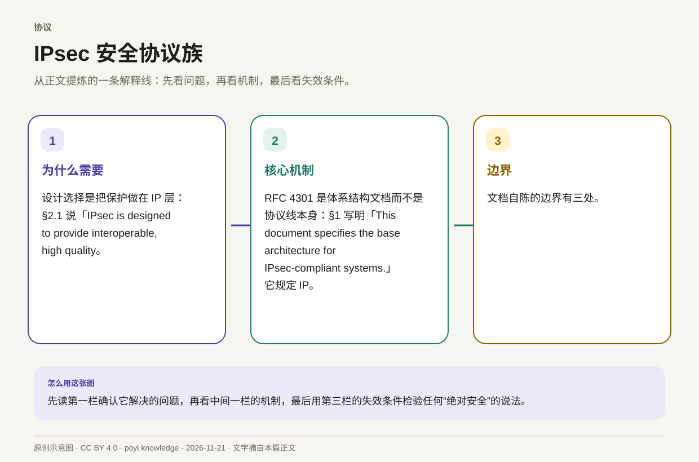
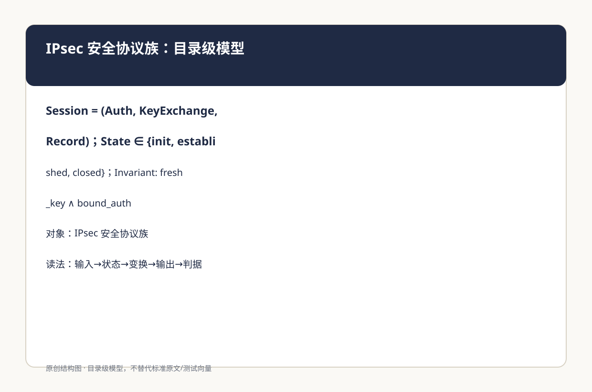

原理与机制
协议：IPsec 安全协议族（Internet Protocol Security）。RFC 4301 是体系结构文档而不是协议线本身：§1 写明「This document specifies the base architecture for IPsec-compliant systems.」它规定 IP 层的安全服务怎么提供。§3.2 给出协议组成「IPsec uses two protocols to provide traffic security services -- Authentication Header (AH) and Encapsulating Security Payload (ESP).」并定下强制基线「IPsec implementations MUST support ESP and MAY support AH.」——即安全关联（SA）上用哪个协议由这套文档约定，密钥与策略管理由另外的文档处理。

为什么重要
设计选择是把保护做在 IP 层：§2.1 说「IPsec is designed to provide interoperable, high quality, cryptographically-based security for IPv4 and IPv6.」并强调「These services are provided at the IP layer, offering protection in a standard fashion for all protocols that may be carried over IP (including IP itself).」§3.1 把它落成一条边界——「IPsec creates a boundary between unprotected and protected interfaces, for a host or a network」，越界的包可以放行、交给 AH/ESP 保护、或被丢弃。§4.1 限定粒度：「An SA is a simplex “connection” that affords security services to the traffic carried by it.」且「Security services are afforded to an SA by the use of AH, or ESP, but not both.」
应用与实例
实现面由三个数据库定义：§4.4 写明「There are three nominal databases in this model: the Security Policy Database (SPD), the Security Association Database (SAD), and the Peer Authorization Database (PAD).」§4.5 要求「All IPsec implementations MUST support both manual and automated SA and cryptographic key management.」§4.5.2 进一步说「Widespread deployment and use of IPsec requires an Internet-standard, scalable, automated, SA management protocol.」并指定默认协议——「The default automated key management protocol selected for use with IPsec is IKEv2 [Kau05].」AH 的地位在 §3.2 被降级并给出理由：「Support for AH has been downgraded to MAY because experience has shown that there are very few contexts in which ESP cannot provide the requisite security services.」

边界与攻击面
文档自陈的边界有三处。§2.2 把成败交给实现：「the security offered by use of these protocols ultimately depends on the quality of their implementation」。§4.5 承认认证强度的上限：「In general, data origin authentication in AH and ESP is limited by the extent to which secrets used with the integrity algorithm」——共享密钥的人越多，认证越弱。§11 给出一个具体的配置陷阱：「If an IPsec implementation is configured to pass ICMP error messages over SAs based on the ICMP header values, without checking the header information from the ICMP message payload, serious vulnerabilities may arise.」并评价那条攻击链「This is a very efficient DoS attack that could have been prevented if the ICMP error messages were subjected to the checks that IPsec provides」。
历史与背景
RFC 4301 由 S.Kent 与 K.Seo（BBN Technologies）署名，2005 年 12 月发布，Standards Track，头部标「Obsoletes: 2401」；摘要说明它是「an updated version of the “Security Architecture for IP”」。§13 评估与旧文档的关系：「This architecture document differs substantially from RFC 2401 [RFC2401] in detail and in organization, but the fundamental notions are unchanged.」并把新增数据库点出来——「There is also a new database, the Peer Authorization Database (PAD).」§10 对两个协议族分别提出同一句符合性要求：「All IPv4 IPsec implementations MUST comply with all requirements of this document.」以及「All IPv6 implementations MUST comply with all requirements of this document.」
逐步示例与核验
形式模型与复算步骤
[\mathrm{Adv}^{\Pi}_A(\lambda)\le n\cdot\mathrm{Adv}^{\mathrm{prf}}F(\lambda)+\varepsilon{\mathrm{aead}}(\lambda)]
IPsec 安全协议族的公开参数、密钥/随机数与消息；变量说明：Π 协议，A 敌手，n 会话数，PRF/AEAD 为底层原语。1.把协议消息序列写成状态机。2.用混合论证逐个替换原语。3.把剩余优势归约到 PRF/AEAD 安全。边界：公式只覆盖已登记的参数与假设；参数取值、标准版本和实现细节仍以来源为准。
参考出处
- Wikipedia search entry for IPsec 安全协议族. https://zh.wikipedia.org/w/index.php?search=IPsec%20%E5%AE%89%E5%85%A8%E5%8D%8F%E8%AE%AE%E6%97%8F
- Handbook of Applied Cryptography (Menezes, van Oorschot, Vanstone). https://www.cacr.math.uwaterloo.ca/hac/
- RFC 4301: Security Architecture for the Internet Protocol. https://www.rfc-editor.org/rfc/rfc4301
- Published standard/RFC for IPsec 安全协议族. https://www.rfc-editor.org/rfc/rfc4301